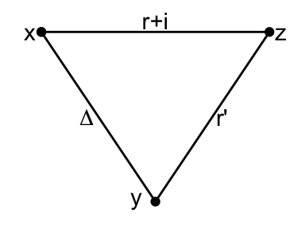
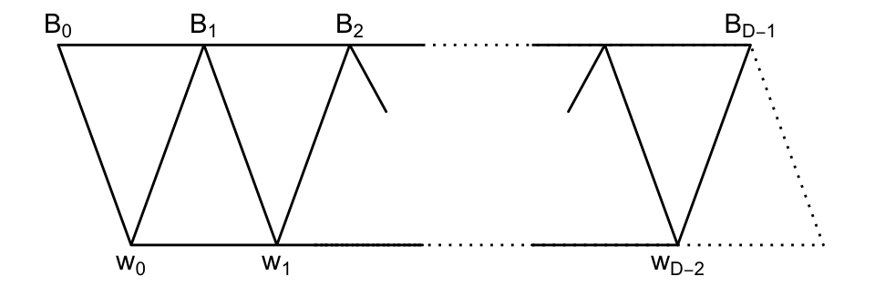

Chapter 11 Examples of \(T\)-Module
Friday, February 12, 1993
Let \(\Gamma = (X, E)\) be a connected graph.
Let \(\theta_0\) be the maximal eigenvalue of \(\Gamma\), and \(\delta\) its corresponding eigenvector. \[\delta = \sum_{y\in X}\delta_y \hat{y}.\] Without loss of generality, we may assume that \(\delta_y\in \mathbb{R}^*\) for all \(y\in X\).
Lemma 11.1 Fix a vertex \(x\in X\). Write \(T \equiv T(x)\), \(E^*_i\equiv E^*_i(x)\).
\(\quad (iia)\) \(W = T\delta\).
\(\quad (iib)\) The diameter \(d(W) = d(x)\).
\(\quad (iic)\) The endpoint \(r(W) = 0\).
Proof. \((i)\) Observe: there exists an irreducible \(T\)-module \(W\) that contains \(\delta\).
Let \(V = \sum_{i}W_i\) be a direct sum decomposition of the standard module. Then \[\mathrm{Span}(\delta) = E_0V = \sum_{i}E_0W_i.\] So, \(E_0W_i \neq 0\) for some \(i\). Then, \[\delta \in E_0W_i \subseteq W_i.\] Observe: \(T\delta\) is an irreducible \(T\)-module.
Since \(\delta\in W\), where \(W\) is a \(T\)-module. As \(T\delta \subseteq W\) and \(W\) is irreducible, \(T\delta = W\).
Observe: \(T\delta = T\hat{x}\).
Since \(\hat{x} = \delta_x^{-1}E^*_0\delta \in T\delta\), \(T\hat{x} \subseteq T\delta\). Since \(T\delta\) is irreducible, \(T\hat{x} = T\delta\).
\((ii)\) \((a)\to (b)\): \[E^*_i\delta = \sum_{y\in X, \partial(x,y) = i}\delta_y\hat{y} \neq 0, \quad (0\leq i\leq d(x)), \] because \(\delta_y >0\) for every \(y\in X\).
Hence, \[E^*_iT\delta \neq 0, \quad (0\leq i\leq d(x)).\] Thus, \(d(x) = d(W)\).
\((b)\to (c)\): Immediate.
\((c)\to (a)\): Since \(r(W) = 0\), \(E^*_0W \neq 0\). Hence, \(\hat{x}\in W\) and \(T\hat{x} \subseteq W\).
By the irreduciblity, we have \(T\hat{x} = W\).
Lemma 11.2 Assume \(\Gamma\) is bipartite \((X = X^+ \cup X^-)\) (\(X^+\) and \(X^-\) are nonempty). Then the following are equivalent.
\[\delta_x = \begin{cases} \alpha^+ & \text{if }\: x\in X^+\\ \alpha^- & \text{if } x\in X^-. \end{cases}\] | \((ii)\) There exist \(k+\) and \(k^-\in \mathbb{Z}^{>0}\) such that \[k(x) = \begin{cases} k^+ & \text{if }\: x\in X^+\\ k^- & \text{if } x\in X^-. \end{cases}\] In this xase, \(k^+k^- = \theta_0^2\), and \(\Gamma\) is called bi-regular.
Proof. \((i)\to(ii)\)  \[\begin{align} A\delta & = A\left(\alpha^+\sum_{x\in X^+}\hat{x} + \alpha^-\sum_{y\in X^-}\hat{y}\right)\\ & = \alpha^+\sum_{y\in X^-}k(y)\hat{y} + \alpha^-\sum_{x\in X^+}k(x)\hat{x}\\ & = \theta_0\delta. \end{align}\] So, \[k(x)\alpha^- = \theta_0\alpha^+, \quad k(y)\alpha^+ = \theta_0\alpha^-.\] As \(\alpha^+\neq =\) and \(\alpha^- \neq 0\), \[\begin{align} k^+ & := k(x) \; \text{ is independent of the choice of $x\in X^+$, and}\\ k^- & := k(y) \; \text{ is independent of the choice of $y\in X^-$.} \end{align}\] Moreover, \(k^+k^- = \theta_0^2\).
\((ii)\to(i)\) Set \[\delta' = \sum_{y\in X}\alpha_y\hat{y} \quad \text{where}\; \alpha = \begin{cases} 1/\sqrt{k^-} & \text{if }\; y\in X^+\\ 1/\sqrt{k^+} & \text{if }\; y\in X^-.\end{cases}\] Then one checks \[\begin{align} A\delta' & = A\left(\frac{1}{\sqrt{k^-}}\sum_{y\in X^+}\hat{y} + \frac{1}{\sqrt{k^+}}\sum_{y\in X^-}\hat{y}\right)\\ & = \frac{k^-}{\sqrt{k^-}}\sum_{y\in X^-}\hat{y} + \frac{k^+}{\sqrt{k^+}}\sum_{y\in X^+}\hat{y}\\ & = \sqrt{k^+k^-}\delta' \end{align}\] Since \(\delta' >0\), \(\delta'\in \mathrm{Span}(\delta)\), and \(\theta_0 = \sqrt{k^+k^-}\).
Definition 11.1 For any graph \(\Gamma = (X, E)\), fix a vertex \(x\in X\). Set \(d = d(x)\).
\(\Gamma\) is distance-regular with respect to \(x\), if for all \(i\) : (0id), and all \(y\in X\) such that \(\partial(x,y) = i\): \[\begin{align} c_i(x) & := |\{z\in X \mid \partial(x,z) = i-1, \; \partial(y,z) = 1\}|\\ a_i(x) & := |\{z\in X \mid \partial(x,z) = i, \; \partial(y,z) = 1\}|\\ b_i(x) & := |\{z\in X \mid \partial(x,z) = i+1, \; \partial(y,z) = 1\}| \end{align}\] depends only on \(i\), \(x\), and not on \(y\).
(In this case, \(c_0(x) = a_0(x) = b_d(x) = 0\), \(c_1(x) = 1\), \(b_0(x) = k(x)\) is the valency of \(x\).)
We call \(c_i(x)\), \(a_i(x)\) and \(b_i(x)\) the intersection numbers with respect to \(x\).
Example 11.1  \[\begin{align} c_0 &= 1 & c_1 &= 1 & c_2 &= 1\\ a_0 &= 0 & a_1 &= 1 & a_2 &= 1\\ b_0 &= 2 & b_1 &= 1 & b_2 &= 0 \end{align}\]